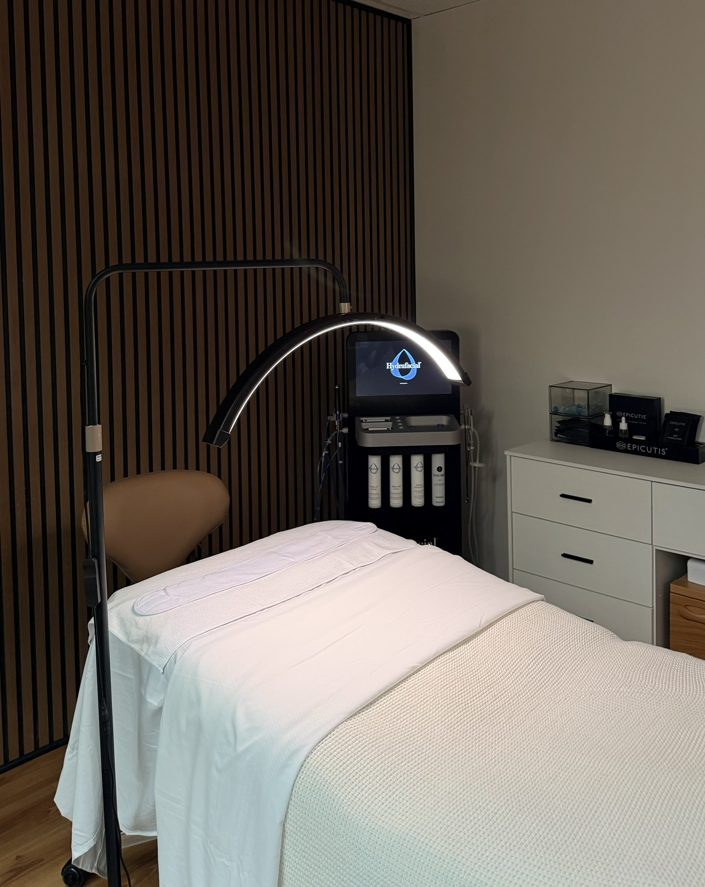
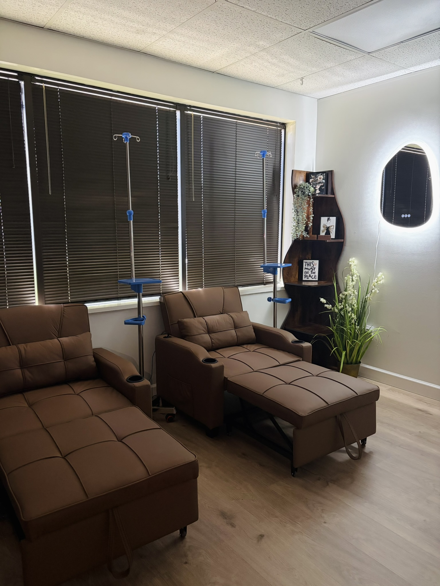
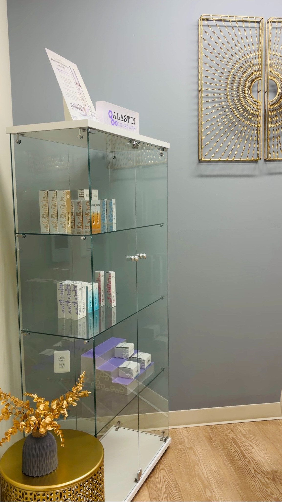
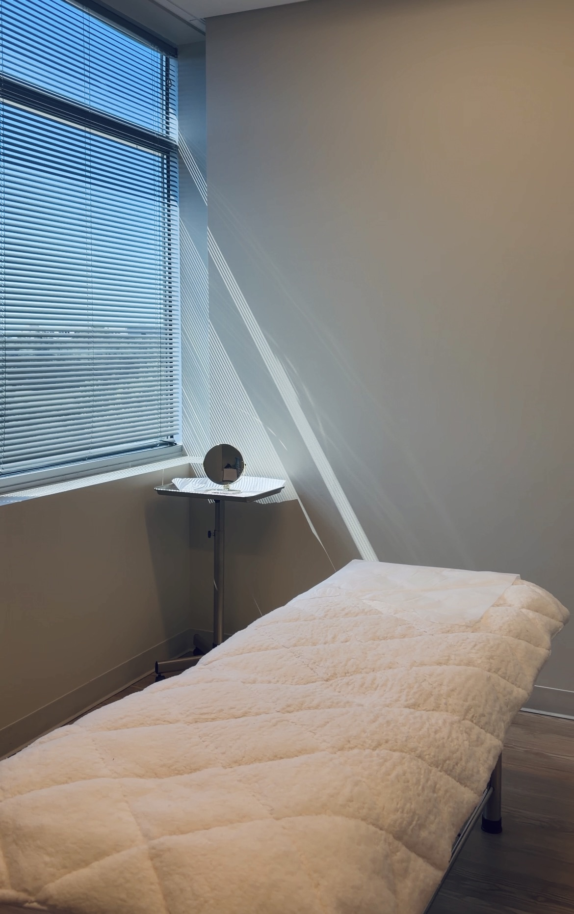

◎
Wellness
- GLP-1 injections
- IV/IM therapy
INFUDERM blends advanced medical aesthetics, wellness, skin treatment, and IV therapy with a refined, safety-first experience in Reston & Aldie, Virginia.
INFUDERM is designed for patients who want a polished aesthetic experience with medical precision and absolute safety. Our goal is to provide personalized, results-driven aesthetic treatments that help every client feel confident, refreshed, and empowered.





